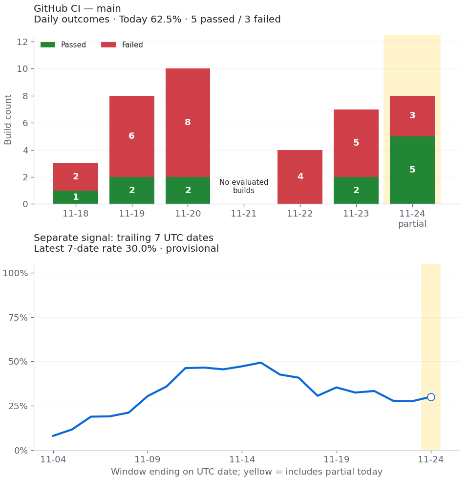
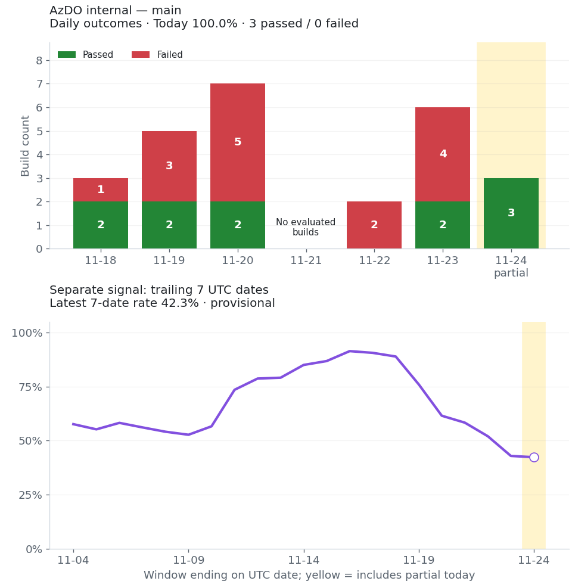
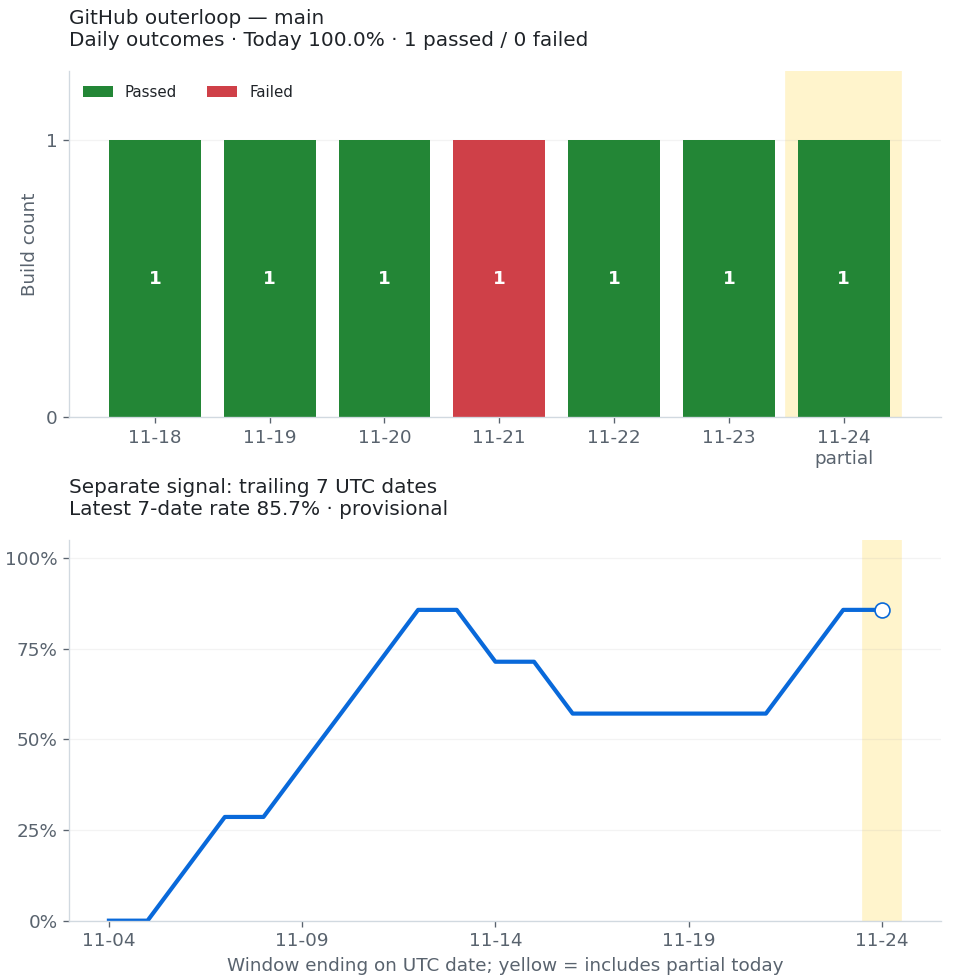
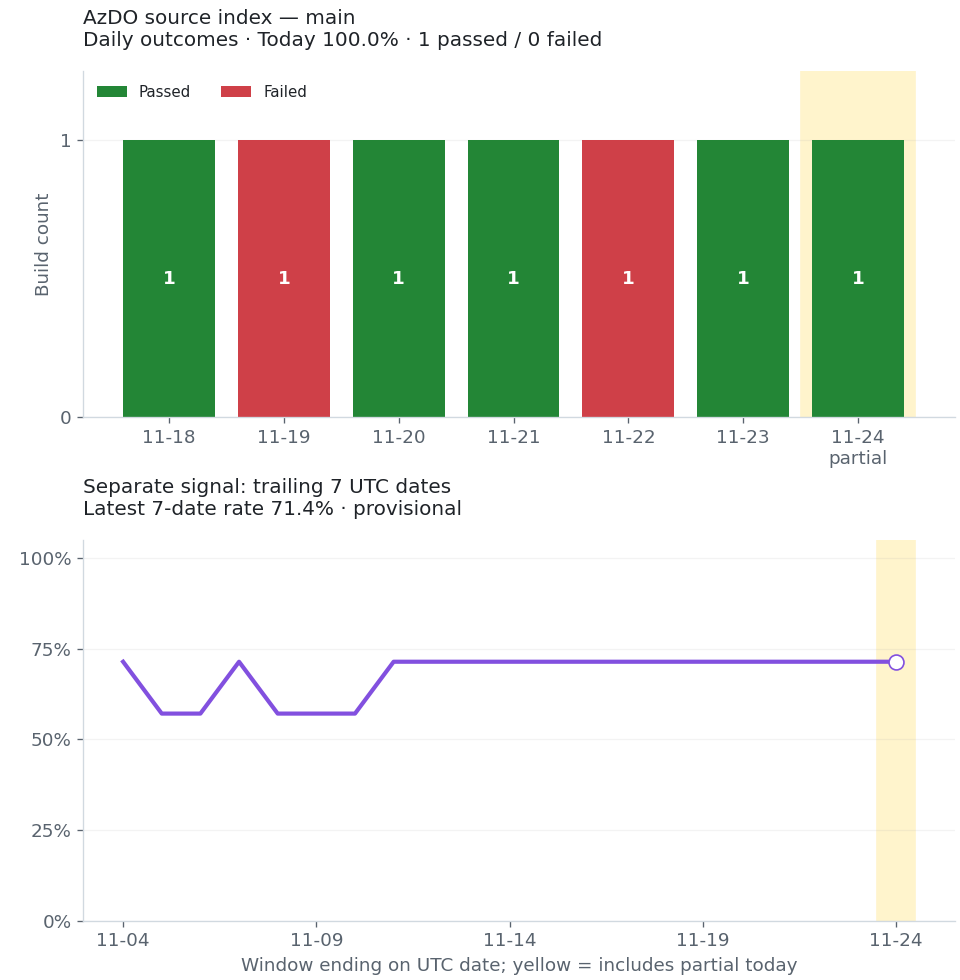
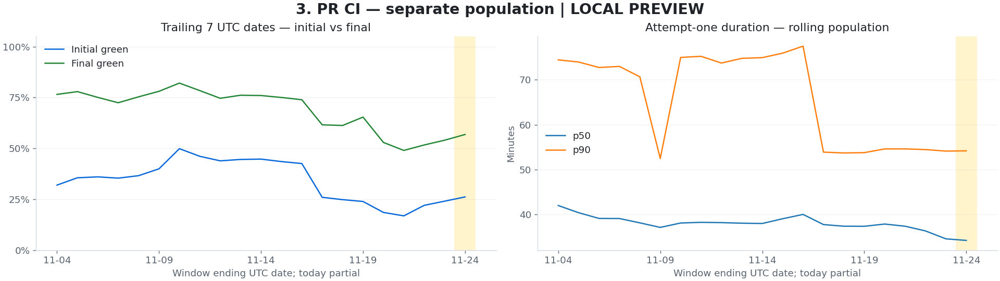

Delivery CI
GitHub and internal Azure DevOps main-branch CI are shown together. Daily bars show the number of builds; lines show the trailing seven-date initial-green rate.
The green numerator is passed builds; the normal-color denominator is all evaluated builds, not failed builds. The percentage is bold; the failed count is separately labeled. Azure DevOps failed/non-green counts include failed and partiallySucceeded builds. A run still in progress is neither a pass nor a failure.
| Lane | Last 48 hours | Current 7 dates | Prior 7 dates | Latest observed |
|---|---|---|---|---|
| GitHub CI - main | 7/16 (43.8%)9 failed builds | 12/40 (30.0%)28 failed builds | 20/49 (40.8%)29 failed builds | Observed: in progress Triggered Nov 24 22:18 UTC Not evaluated |
| AzDO internal - main | 5/9 (55.6%)4 failed builds | 11/26 (42.3%)15 failed builds | 29/32 (90.6%)3 failed builds | Observed: in progress Triggered Nov 24 21:12 UTC Not evaluated |
GitHub CI - main: daily outcomes and trailing-seven-date trend

Azure DevOps CI - main: daily outcomes and trailing-seven-date trend

Lower-cadence checks
Show lower-cadence charts and results
Outerloop and source index are separate from delivery CI.
| Lane | Last 48 hours | Current 7 dates | Prior 7 dates | Latest observed |
|---|---|---|---|---|
| GitHub outerloop - main | 2/2 (100.0%)0 failed builds | 6/7 (85.7%)1 failed build | 4/7 (57.1%)3 failed builds | Observed: success Nov 24 02:07 UTC |
| AzDO source index - main | 2/2 (100.0%)0 failed builds | 5/7 (71.4%)2 failed builds | 5/7 (71.4%)2 failed builds | Observed: succeeded Nov 24 00:00 UTC |
GitHub outerloop - main: daily outcomes and trailing-seven-date trend

Azure source index - main: daily outcomes and trailing-seven-date trend

PR CI
PR runs are a separate population. Later successful reruns do not erase initial failures.
| Window | Initial green | Final green | Recovered on rerun | Attempt-one p50 / p90 |
|---|---|---|---|---|
| Current 7 dates (partial) | 69/264 (26.1%) | 150/264 (56.8%) | 81 | 34.2 / 54.2 min (n=260) |
| Prior 7 full dates | 83/320 (25.9%) | 197/320 (61.6%) | 114 | 37.7 / 53.9 min (n=317) |

How to read this preview
Counts are builds, not test cases. GitHub reliability uses the first completed success or failure; Azure DevOps treats succeeded as green and failed or partially succeeded as non-green. Cells show passed/evaluated builds. Today's date was partial at collection time.
The data is a saved collection, including cached dates that were not freshly verified. Outcomes were observed during collection, not reconstructed historical statuses. CI Insights was not used for this preview. A fresh production report has not yet been generated.
This public page serves static HTML and images from the ci-health-pages branch; it does not fetch CI data. The tracking issue points to this page; recurring report runs do not update the issue.